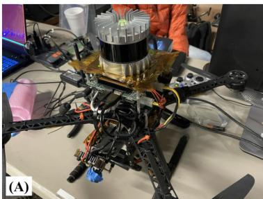

🎯 主题：直接法激光里程计 · 关键帧空间子图 · 数据结构复用👥 作者：Kenny Chen、Brett T. Lopez、Ali-akbar Agha-mohammadi、Ankur Mehta（NASA JPL Team CoSTAR）📅 2022 · Direct LiDAR Odometry: Fast Localization With Dense Point Clouds（RA-L / ICRA）
DLO 的作者选了第三种姿态，原文叫 speed-first（速度优先）哲学：允许点云「几乎不做预处理」，然后靠数据结构上的巧劲把速度抠出来。它的目标平台是 NASA JPL 的 Team CoSTAR 参加 DARPA 地下挑战赛用的一批机器人——自研四旋翼和波士顿动力的 Spot 机器狗，这些平台算力都非常有限。
先说一个必须纠正的名字问题
这篇论文的作者是 Kenny Chen、Brett T. Lopez、Ali-akbar Agha-mohammadi、Ankur Mehta（NASA JPL 的 Team CoSTAR，IEEE RA-L 2022）。原文里没有 Ryan，也没有 Zhang 这两位作者。如果之前在哪看到「Ryan / Zhang 的 DLO」，那是记错了。本篇课程以原文署名页为准。

原图注（Fig. 1，A 子图）：Fast and lightweight LiDAR odometry. Two of Team CoSTAR’s robotic platforms which have limited computational resources. (A) Our custom quadrotor platform which features an Ouster OS1 LiDAR sensor on top. (B) A Boston Dynamics Spot robot with a mounted custom payload and a Velodyne VLP-16 with protective guards. (C) Top-down view of a mapped limestone mine using our lightweight odometry method on these robots during testing and integration for the DARPA Subterranean Challenge.
（中译：快速、轻量的激光里程计。Team CoSTAR 的两台算力受限机器人平台。(A) 我们自研的四旋翼平台，顶部装有 Ouster OS1 激光雷达。(B) 一台波士顿动力 Spot 机器人，搭载定制负载和带防护罩的 Velodyne VLP-16。(C) 用我们这套轻量里程计，在 DARPA 地下挑战赛测试与集成期间由这些机器人建出的石灰岩矿俯视图。） 怎么看这张图：这里展示的是本篇报告的 (A) 子图（按原文顺序推断，(B) 是 Spot、(C) 是矿洞俯视地图）。请重点看两件事：① 这是一台小小的四旋翼——上面能装的计算机有多寒酸，你可以想象一下；② 顶上的 Ouster OS1 是360° 机械旋转式激光雷达，也就是原文假设的输入类型。图注里的关键信息是最后半句：这两台平台的共同点是「computationally limited（算力受限）」——这正是 DLO 全部设计的出发点。
2. ★ 「Direct」在这里指什么：不提取特征
这是本篇最容易被误解的一个词。先看原文的原话，它说得非常直接：
原文原话
「……we directly use the dense point cloud rather than extracting features as most works do」
（中译：我们直接使用稠密点云，而不是像大多数工作那样提取特征。）
这两个词经常被混着用，但它们描述的是两件不同的事：
① 「稠密」描述的是点云的状态——经过上面两步处理后，一帧还剩约 10,000 个点。对比一下 LOAM 那种提完特征只剩几百个点的情况，这个数量确实算「稠密」。
② 「直接」描述的是技术路线——不经过「提取特征」这一步，直接拿点云做配准。
所以：「稠密」是「还没被筛掉」，而「直接」是「不去筛」。前者说的是结果，后者说的是做法。它们经常一起出现，但你完全可以在稠密点云上做特征提取，也可以对稀疏点云用直接法——两者不是同义词。
原图注（Fig. 3）：Keyframe-based submapping. A comparison between the different submapping approaches, visualizing the current scan (white), the derived submap (red), and the full map (blue). (A) A common radius-based submapping approach of $r=20$ m retrieved in point cloud-space. (B) Our keyframe-based submapping approach, which concatenates a subset of keyed scans and helps anchor even the most distant points in the current scan (green box) during the scan-to-map stage.
（中译：基于关键帧的子图法。不同子图取法之间的对比，其中当前扫描为白色、派生出的子图为红色、完整地图为蓝色。(A) 一种常见的、在点云空间里按半径 $r=20$ m 取子图的做法。(B) 我们基于关键帧的子图法，它把若干关键帧的扫描拼接起来，从而在帧对图配准阶段连当前扫描里最远的那些点（绿框）也能被锚住。） 怎么看这张图：这是本篇的核心图，请盯住那个绿框。① 上半 (A) 是按 20 米半径圈出来的子图（红色）——它只罩住了车的近处，远处那个绿框里的点完全落在红子图外面，找不到对应的东西来对齐，只能漂；② 下半 (B) 是关键帧子图——因为子图是由整帧扫描拼起来的，一帧扫描本来就能打到很远处，所以红色区域把绿框也罩住了；③ 原文的结论是：半径法想靠「把半径开大」来补救，但那会让后续的协方差计算显著变慢；而关键帧法天然就是「要多大有多大」。
原图注（Fig. 2）：LiDAR odometry architecture. Our system first retrieves a relative transform between two temporally-adjacent scans of times k and k−1 through scan-to-scan (S2S) matching with RANSAC outlier rejection and an optional rotational prior from IMU. This initial estimate is then propagated into the world frame and used as the initialization point for our secondary GICP module for scan-to-map optimization (S2M), which scan-matches the current point cloud with a derived submap consisting of scans from nearby and boundary keyframes. The output of this is a globally-consistent pose estimate which is subsequently checked against several metrics to determine if the current pose should be stored as a new keyframe.
（中译：激光里程计架构。系统先通过带 RANSAC 外点剔除和可选 IMU 旋转先验的帧对帧（S2S）匹配，求出时刻 $k$ 与 $k-1$ 两帧相邻扫描之间的相对变换。这个初值随后被传播到世界坐标系，作为第二个模块——用于帧对图优化（S2M）的 GICP 模块的初始化点；S2M 把当前点云与一个由邻近关键帧和边界关键帧的扫描派生出的子图做匹配。输出是一个全局一致的位姿估计，随后用若干指标检查它是否应被存为新的关键帧。） 怎么看这张图：① 顺着箭头读一遍就是整条流水线：S2S 求初值 → 传播到世界系 → S2M 的 GICP 精化 → 判断要不要存关键帧；② 请找到图注里那句 optional rotational prior from IMU——「可选的、来自 IMU 的旋转先验」。注意它说的是 rotational（旋转），不是完整位姿，也不是「IMU 参与优化」。这个措辞是下一节判定的第一手证据；③ 图注里还有一句 nearby and boundary keyframes（邻近关键帧 + 边界关键帧），正是上一节讲的 $Q_k$ 与 $H_k$。 一处 OCR 修正：原文这一句在原始转换里写作「times k and k 1」，减号丢了，按上下文应为 k 与 k−1（两个时间上相邻的扫描）。此处已修正。
原图注（Fig. 9）：Extreme environments. Top: A section of an underground mine in Lexington, KY mapped autonomously using our custom drone while running DLO. This environment contained challenging conditions such as: (A) low illuminance, (B) object obstructions, and (C) wet and muddy terrain. Bottom: Top-down (D) and side (E) views of the three levels of an abandoned subway located in Downtown Los Angeles, CA mapped via DLO using a Velodyne VLP-16 on a quadruped. In this run, we manually tele-operated the legged robot to walk up, down, and around each floor for a total of 856 m.
（中译：极端环境。上图：肯塔基州列克星敦的井下矿洞一段，由自研无人机在运行 DLO 时自主建图。该环境包含这些挑战条件：(A) 低照度、(B) 物体遮挡、(C) 湿滑泥泞地形。下图：加州洛杉矶市中心一处废弃地铁的三层结构的俯视 (D) 与侧视 (E)，由搭载在四足机器人上的 Velodyne VLP-16 运行 DLO 建出。本次运行中人工遥控这台足式机器人走遍每层，总里程 856 m。） 怎么看这张图：这张图回答的是「实验室数字能不能搬到真实世界」。① 先看上半部分的三个字母标注：(A) 低照度——矿洞里没有光，但激光不依赖光，所以对 DLO 无影响；(B) 物体遮挡——通道里堆着东西，这正是子图法「远处点也能锚住」要解决的；(C) 湿滑泥泞——地面反射条件变了，考验点云质量的鲁棒性。② 再看下半部分 (D) 侧的三层结构：能在立体多层里不串层，说明子图管理是有效的。③ 最后记住那个数字：856 m、端到端漂移 10 cm——这个精度是纯 CPU、无 GPU 的嵌入式板子跑出来的，而且没有任何回环。 要记住的一句话：本篇所有「快」的数字，最终都要能在这张图里的机器人和环境上兑现，才算数。而它没做的那些事（畸变校正、紧耦合、回环），也同样写在这里——成绩和边界是同一份报告里的两页。
课后练习
请解释：DLO 里「稠密」和「直接」这两个词分别指什么？为什么不能当成同义词？
展开查看答案
「稠密」描述的是点云的状态。DLO 只做了两步预处理——1 m³ 的盒子滤波去掉机器人自身点、0.25 m 的体素网格轻下采样——处理之后平均每帧还有约 10,000 个点，相对于特征法提完只剩几百个点来说，这算是稠密的。
「直接」描述的是技术路线。原文的原话是「we directly use the dense point cloud rather than extracting features as most works do」，也就是跳过「提取特征」这一步，直接拿点云做配准（用 GICP 的平面-平面度量）。
依据一（Fig. 2 图注与 Sec. II）：原文写系统「optionally accepts an initialization prior from an IMU in a loosely-coupled fashion」，即可选地以松耦合方式接受一个 IMU 初始化先验；实现上只对陀螺做四元数积分 $q_{k+1}=q_k+\frac{1}{2}q_k\otimes\omega_k\Delta t$，只取旋转部分，平移先验明确留作未来工作。